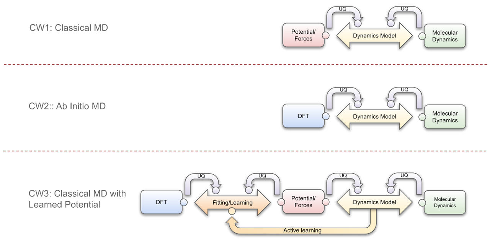
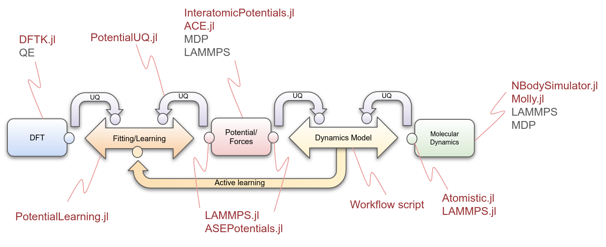

[WIP] Atomistic Composable Workflows
The Center for the Exascale Simulation of Materials in Extreme Environments (CESMIX) is a new MIT research effort to advance the state-of-the-art in predictive simulation. It seeks to connect quantum and molecular simulations of materials with state-of-the-art programming languages, compiler technologies, and software performance engineering tools, underpinned by rigorous approaches to statistical inference and uncertainty quantification.
This repository aims to gather easy-to-use CESMIX-aligned case studies, integrating the latest developments of the Julia atomistic ecosystem with state-of-the-art tools. This is a work in progress and is not ready for production, however some of our examples can already be used.
Atomistic composable workflows
A series of composable workflows is guiding our design and development. We analyzed three of the most representative workflows: classical MD, Ab initio MD, and classical MD with active learning.

- CW1 describes the software components and relationships of a classical MD simulation. Essentially, at each time step, the force associated with each atom is calculated based on the interatomic potential, and then used to calculate each new atomic position.
The correct functioning of the calculators is analyzed and reported, via the curved arrow components to the dynamics model or control component. E.g. a UQ analysis is performed on the force and MD calculations so that the control module can take corrective action. In addition, a composable design must guarantee the communication of all the processes, for this purpose "wrapper" components, represented by small circles in the figure, are included in the design. The wrappers are key in this design because they allow heterogeneous software to coexist in the same workflow. Each wrapper implements a set of interfaces associated with a particular component.
- CW2 depicts an Ab initio MD process. It is mostly analogous to the workflow described above, but in this case the force calculation is provided by a DFT simulation.
- CW3 presents a combination of the latter workflows. Here, potentials/forces are fitted with respect to the data generated by the DFT simulator. The fitting process is complex and therefore requires a dedicated software component, as well as analysis of its inputs in terms of error, sensitivity, etc. Furthermore, the dynamics model component, based on the analysis of the potential, forces and molecular dynamics, can re-fit these forces in a process called active learning.
Atomistic suite for CESMIX in Julia
This composable approach allowed us to characterize each software component involved, which can be associated with one or more atomistic tools, as well as their interactions with other components. In particular, an increasing number of Julia packages dedicated to atomistic simulations are currently being developed. These packages combine the dynamic and interactive nature of Julia with its high-performance capabilities.

- AtomsBase.jl is a lightweight abstract interface for representation of atomic geometries. It helps in the operability of diverse atomistic tools. Furthermore, AtomIO.jl is a standard IO package for atomic structures integrating with FileIO, AtomsBase, and others.
- DFTK.jl, the density-functional toolkit, is a library for playing with plane-wave density-functional theory (DFT) algorithms. In its basic formulation it solves periodic Kohn-Sham equations.
- InteratomicPotentials.jl and InteratomicBasisPotentials.jl are responsible for providing the methods to calculate the energies, forces and virial tensors of the potentials that we use in CESMIX.
- PotentialLearning.jl aims to facilitate active learning of interatomic potentials in atomistic simulations of materials incroporating elements of bayesian inference and machine learning.
- Atomistic.jl provides an integrated workflow for MD simulations.
- LAMMPS.jl provides the bindings to the LAMMPS API, allowing other modules to access interatomic potentials, such as SNAP.
Case studies
Listed here is a subset of the case studies we are developing. We are gradually adding new cases as well as improving and increasing the complexity of the current ones.
| CW | Type | DFT | UQ | Fitting/ Learning | Potential / Forces | Molecular Dynamics | Location |
|---|---|---|---|---|---|---|---|
| 1 | Ar | ✓ | ✓ | InteratomicPotentials.jl → Lennard Jones / ACE | LAMMPS.jl → LAMMPS | Current repo | |
| 1 | Ar | ✓ | ✓ | InteratomicPotentials.jl → LennardJones / ACE | Atomistic.jl → Molly.jl | Current repo | |
| 1 | Ar | InteratomicPotentials.jl → LennardJones | Atomistic.jl → Molly.jl | Atomistic.jl repo | |||
| 1 | Na | LAMMPS.jl → EAM | LAMMPS.jl → LAMMPS | Current repo | |||
| 3 | Na | DFTK.jl | ✓ | ✓ | InteratomicPotentials.jl → SNAP / ACE | LAMMPS.jl → LAMMPS | Current repo |
| 3 | HfO2 , a-HfO2, TiO2, etc. | Multiple sources | ✓ | InteratomicPotentials.jl → ACE | Atomistic.jl → Molly.jl | Current repo |
Atomistic.jl also provides abstractions for using NBodySimulator.jl, however we are currently focusing on Molly.jl, which provides more flexibility.
Examples of use can be found on the websites or github repositories of each tool mentioned.
Example
In the folder ACE, you will find a basic integrated example that allows you to fit different DFT datasets using ACE, run multiple serial/parallel fitting experiments, and run an MD simulation.
Chose a DFT dataset
Choose a DFT dataset. Currently, this code accepts either two xyz files, one for training and one for testing, or a single xyz file, which is automatically split into training and testing. Example datasets can be downloaded from the following urls.
- a-HfO2 dataset: "Machine-learned interatomic potentials by active learning: amorphous and liquid hafnium dioxide". Ganesh Sivaraman, Anand Narayanan Krishnamoorthy, Matthias Baur, Christian Holm, Marius Stan, Gábor Csányi, Chris Benmore & Álvaro Vázquez-Mayagoitia. DOI: 10.1038/s41524-020-00367-7. Dataset url
- FitSNAP: A Python Package For Training SNAP Interatomic Potentials for use in the LAMMPS molecular dynamics package. Datasets url
- CESMIX training data repository. Datasets url
Fit ACE
The input parameters are listed below:
| Input parameter | Description | E.g. |
|---|---|---|
| experiment_path | Experiment path | TiO2/ |
| dataset_path | Dataset path | data/ |
| trainingset_filename | Training datasets filename | TiO2trainingset.xyz |
| testset_filename | Test datasets filename | TiO2testset.xyz |
| ntrainsys | No. of atomic configurations in training dataset | 80 |
| ntestsys | No. of atomic configurations in test dataset | 20 |
| n_body | Body order | 3 |
| max_deg | Maximum polynomial degree | 3 |
| r0 | An estimate on the nearest-neighbour distance for scaling | 1.0 |
| rcutoff | Outer cutoff radius | 5.0 |
| wL | See run-experiments.jl | 1.0 |
| csp | See run-experiments.jl | 1.0 |
| w_e | Energy weight | 1.0 |
| w_f | Force weight | 1.0 |
Run fitting process
$ julia fit-ace.jl experiment_path TiO2/ \
dataset_path data/ \
trainingset_filename TiO2trainingset.xyz \
testset_filename TiO2testset.xyz \
n_train_sys 80 \
n_test_sys 20 \
n_body 3 \
max_deg 3 \
r0 1.0 \
rcutoff 5.0 \
wL 1.0 \
csp 1.0 \
w_e 1.0 \
w_f 1.0In addition, you can run the experiments with the default parameters (the parameters shown above).
$ julia fit-ace.jlRun multiple fitting experiments in serial/parallel using the wrapper to ACE1.jl in InteratomicBasisPotentials.jl
Modify the file run-experiments.jl to specify the parameter ranges needed to generate the experiments. E.g.
# Parallel execution. Warning: a high number of parallel experiments may degrade system performance.
parallel = true
# n_body: body order. N: correlation order (N = n_body - 1)
n_body = 2:5
# max_deg: maximum polynomial degree
max_deg = 3:6Run the script:
$ julia run-experiments.jlEach experiment is run in a separate process (using nohup to facilitate its execution in a cluster). The results are stored in the folder experiments/. After all experiments have been completed, run the following script to gather the results into a single csv.
$ ./gather-results.shRun an MD simulation using the wrapper to Molly.jl or NBodySimulator.jl in Atomistic.jl
$ run-md-ahfo2-ace-nbs.jlor
$ run-md-ahfo2-ace-molly.jl(Note: currently there is a bug in the second script)
Installation
Install Julia on Ubuntu
Open terminal and download Julia from https://julialang.org/downloads/
$ wget https://julialang-s3.julialang.org/bin/linux/x64/1.7/julia-1.7.3-linux-x86_64.tar.gzExtract file
$ tar xvzf julia-1.7.3-linux-x86_64.tar.gzCopy to /opt and create link
$ sudo mv ./julia-1.7.3 /opt/
$ sudo ln -s /opt/julia-1.7.3/bin/julia /usr/local/bin/juliaAlternative: add line to .shellrc
$ nano .shellrc
PATH=$PATH:/home/youruser/julia-1.7.3 /bin/Restart the terminal
Clone repository, add registries, and install dependencies
Clone repository iin your work directory
$ git clone https://github.com/cesmix-mit/AtomisticComposableWorkflows.gitOpen a Julia REPL
$ juliaAdd registries: General, CESMIX, and MolSim. Type [, then:
pkg> registry add https://github.com/JuliaRegistries/General
pkg> registry add https://github.com/cesmix-mit/CESMIX.git
pkg> registry add https://github.com/JuliaMolSim/MolSim.gitActivate and instantiate
pkg> activate .
pkg> instantiate